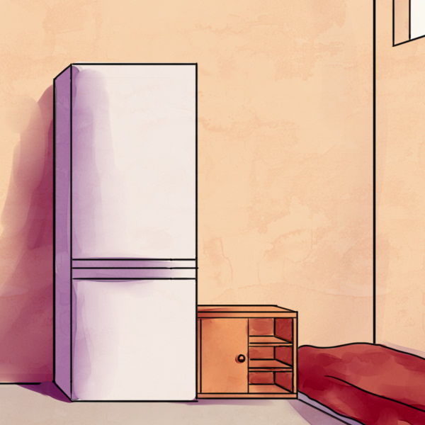

False sun - quest game with elements of detective and horror. You are in a closed room and you need to go out while trying to figure out why you are here.
The main character of the game is Victoria. A girl of 14-15 years old is not tall. The character is nasty and picky. She is from a fairly wealthy family so that Victoria will not feel comfortable in a lonely strange room, which will create an additional difficulty. Perhaps something will make her think not only about herself and appreciate life. Her priorities may change.
The game is under development. Estimated release date is unknown.